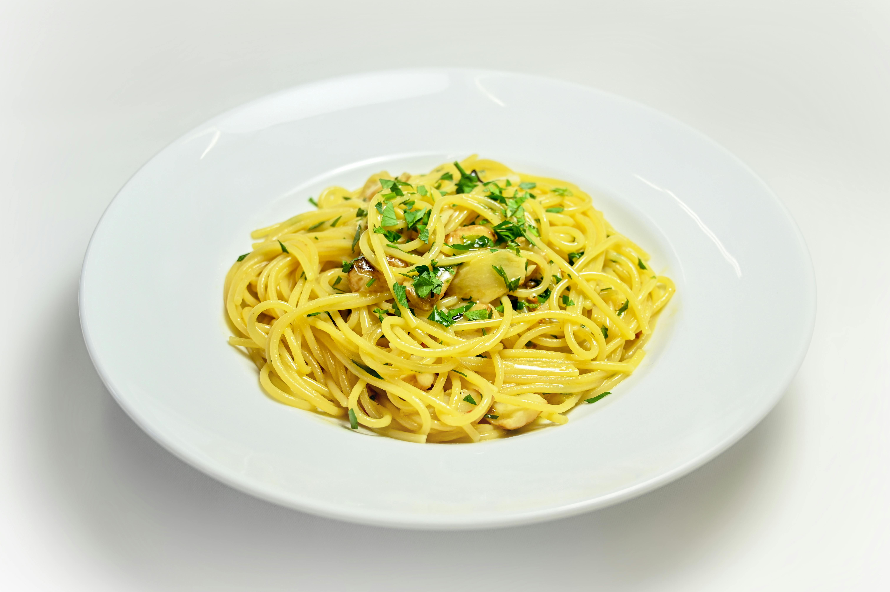

Spaghetti Aglio e Olio Recipe

Spaghetti Aglio e Olio is a simple and flavorful Italian pasta dish made with garlic, olive oil, red pepper flakes, and parsley. It's quick to prepare and perfect for a weeknight meal.
Ingredients
- 400g spaghetti
- 6 cloves garlic, thinly sliced
- 1/2 cup extra virgin olive oil
- 1 teaspoon red pepper flakes (adjust to taste)
- 1/4 cup fresh parsley, chopped
- Salt, to taste
- Freshly ground black pepper, to taste
- Grated Parmesan cheese (optional)
Instructions
- Bring a large pot of salted water to a boil. Add the spaghetti and cook according to the package instructions until al dente. Reserve 1 cup of pasta water, then drain the spaghetti.
- While the pasta is cooking, heat the olive oil in a large skillet over medium heat. Add the sliced garlic and red pepper flakes, and sauté until the garlic is golden brown and fragrant, about 2-3 minutes. Be careful not to burn the garlic.
- Add the cooked spaghetti to the skillet and toss to coat in the garlic oil mixture. If the pasta seems dry, add a little of the reserved pasta water, a tablespoon at a time, until you reach your desired consistency.
- Stir in the chopped parsley and season with salt and freshly ground black pepper to taste.
- Serve immediately, topped with grated Parmesan cheese if desired.
disclaimer: recipe is ai generated